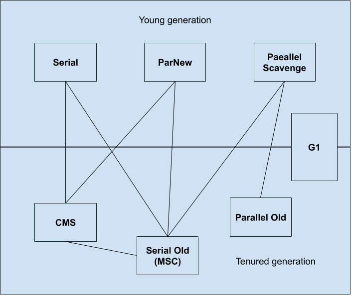
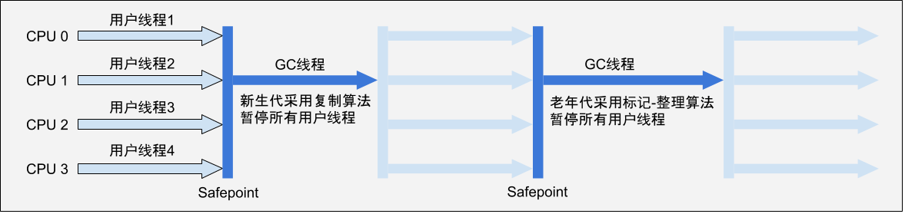
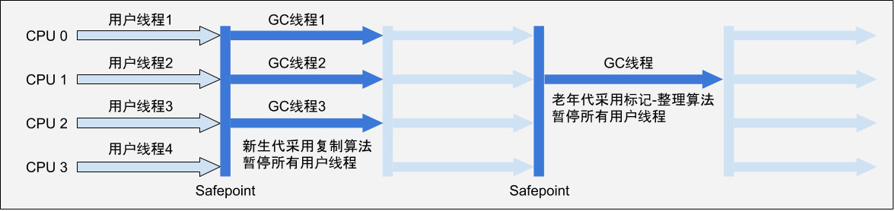
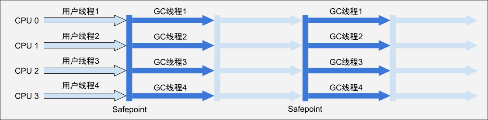
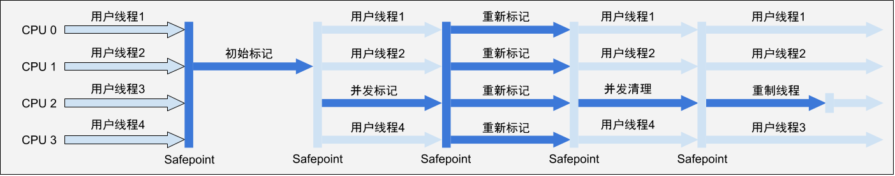
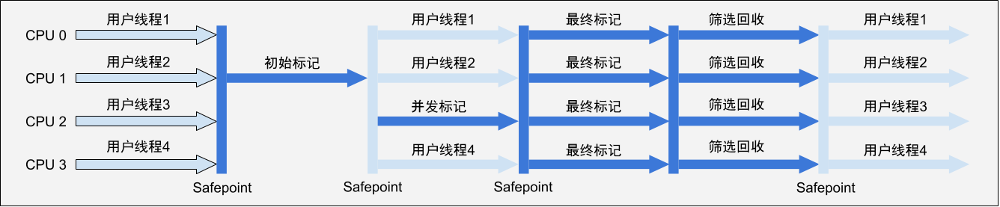

1.对象存活判定
1）引用计数算法
给对象添加一个引用计数器，每当有一个地方引用它时，计数器值就加1；当引用失效时，计数器的值就减1。当计数器为0的对象就是不再被使用的。
引用计数算法的实现简单，判定效率也很高，但是在主流的Java虚拟机里面没有选用它来管理内存，很大原因就是无法解决对象之间的相互循环引用的问题。
2）可达性分析算法（Reachability Analysis）
在主流的商用程序语言的主流实现中，都是通过可达性分析来判定对象是否存活的。这个算法的基本思路就是通过一系列的称为“GC Roots”的对象作为起始点，从这些节点开始往下搜索，搜索走过的路径称为引用链，当一个对象到GC Roots没有任何引用链相连时，则证明此对象不可用。
在Java语言中，可作为GC Roots的对象的包括以下几种：
- 虚拟机栈（栈帧中的本地变量表）中引用的对象
- 方法区中类静态熟悉引用的对象
- 方法区中常量引用的对象
- 本地方法栈中JNI引用的对象
3）引用的定义
在JKD1.2以前，Java中引用的定义是如果reference类型的数据中存储的数值代表的是另外一块内存的起始地址，就称这块内存代表一个引用。这种定义很纯粹，但是太过于狭隘。对于一些“食之无味，弃之可惜”的对象就显得无能为力，我们希望在内存空间还足够的时候，保留这样的对象，当内存空间进行垃圾收集后还非常紧张，则可以选择抛弃这些对象。
在JDK1.2之后，Java对引用的概念进行了扩充，将引用分为了强引用、软引用、弱引用、虚引用这四种，它们的引用强度依次减弱。
- 强引用（Strong Reference）：程序中普遍存在的引用，只要强引用还存在，垃圾收集器永远不会回收掉被引用的对象。
- 软引用（Soft Reference）：用来描述一些还有用但并非必需的对象。对于软引用关联着的对象在系统要发生内存溢出异常之前，会把这些对象列进回收范围之中进行二次回收，如果这次回收还没有足够的内存，才会抛出内存溢出异常。在JDK1.2之后，提供了SoftReference类来实现软引用。
- 弱引用（Weak Reference）：用来描述非必需对象，但是强度比软引用更弱一些，被弱引用关联的对象只能生存到下一次垃圾收集发生之前。当垃圾收集器工作时，无论当前内存是否足够，都会回收掉只被弱引用关联的对象。在JDK1.2之后，提供了WeakReference类来实现弱引用。
- 虚引用（Phantom Reference）：最弱的一种引用关系，不会对其生存时间构成影响，也无发通过虚引用来取得一个对象实例。对象设置虚引用关联的唯一目的是这个对象被垃圾收集器回收时会收到一个系统通知。在JDK1.2之后，提供了PhantomReference类来实现虚引用。
4）对象的回收判定
即使在可达性分析算法中不可达的对象，也并非“非死不可”，要宣告一个对象需要被回收，至少要经历两次标记过程：如果对象在进行可达性分析后发现没有与GC Roots相连的引用链，那它会被第一次标记并且进行一次此对象是否有必要执行finalize()方法的筛选。
当对象没有覆盖finalize()方法或者finalize()方法已经被虚拟机调用过，此时虚拟机对该对象宣告死亡。
如果这个对象有必要执行finalize()方法，对象会被放置在一个F-Queue的队列中，并由一个虚拟机自动建立的、低优先级的Finalizer线程去执行。但是“执行”仅仅意味着虚拟机会触发这个方法，但不承诺会等待它运行结束，目的是如果一个对象在finalize()方法中执行缓慢（甚至发生了死循环），可能会导致F-Quene队列中其他对象处于等待，进而导致整个内存回收系统奔溃。
finalize()方法是对象逃离被回收命运的最后一次机会，稍后GC会对F-Queue中的对象进行第二次小规模标记，如果此时对象在finalize()中重新与引用链的任何一个对象建立关联，则可以被移出“即将回收”的集合，否则就会被回收。
任何一个对象的的finalize()方法都只会被系统调用一次，如果对象面临下一次回收，则它的finalize()方法不会被执行。
5）方法区（HotSpot虚拟机中的永久代）的GC
在堆中，尤其是新生代中进行一次垃圾收集一般可以回收70%-95%的空间，而永久代的垃圾收集效率远低于此。永久代的垃圾收集主要回收两部分内容：废弃常量和无用的类。
- 回收废弃常量
当一个常量已经进入了常量池，但是当前系统没有任何一个对象引用常量池中的常量，也没有任何地方引用这个字面量，如果这时发生内存回收，而且必要的话，这个常量就会被系统清理出常量池。
- 回收无用的类
判定一个类是否是无用的类需要同时满足以下3个条件：
- 该类所有的实例都已经被回收（Java堆中不存在该类的任何实例）。
- 加载该类的ClassLoader已经被回收。
- 该类对应的java.lang.Class对象没有在任何地方被引用，无法在任何地方通过反射访问该类的方法。
虚拟机可以对满足上述3种判断条件的无用的类进行回收，但并不是和对象一样不使用了就必然会被回收。是否对类进行回收，HotSpot虚拟机提供了-Xnoclassgc参数进行控制，还可以使用-verbose:class以及-XX:+TraceClassLoading、-XX:+TraceClassUnLoading查看类中加载和卸载信息。
在大量使用反射、动态代理、CGLib等ByteCode框架、动态生成JSP以及OSGi这类频繁自定义ClassLoader的场景都需要虚拟机具备类卸载功能，以保证永久代不会溢出。
2.垃圾收集算法
1）标记-清除算法(Mark-Sweep)
- 基本思路
最基础的收集算法是“标记—清除”算法，算法分为“标记”和“清除”两个阶段：首先标记出所有需要回收的对象，在标记完成后统一回收所有标记的对象。
- 缺点
它主要有两点不足：一个是效率问题，标记和清除的两个过程的效率都不高；另一个是标记清除后会产生大量的不连续的碎片，空间碎片太多可能会导致以后在程序运行过程中需要分配较大的对象时无法找到足够连续的内存而不得不提前触发另一次GC。
2）复制算法(Copying)
- 基本思路
为解决效率问题，出现了复制算法。它将可用的内存容量划分为大小相等的两块，每次只使用其中的一块。当这一块用完了之后就将还存活着的对象复制到另一块上面，然后把已经使用过的内存空间一次性清理掉。
- 优点
优点是只对整个半区进行内存回收，内存分配时就不需要考虑内存碎片等问题，运行高效实现简单。
- 缺点
缺点是需要将内存缩小为原来的一半，需要的代价太高。
3）标记-整理算法(Mark-Compact)
- 基本思路
根据老年代的特点（对象存活率较高，没有额外的空间对它进行分配担保），提出了一种适用于老年代的“标记—整理”算法。标记过程与“标记—清除”算法一样，但后续步骤不是直接对可回收对象进行清理，而是让所有存活的对象都向一端移动，然后直接清理掉端边界以外的内存。
- 优点
相较于复制算法可以避免内存空间的浪费，避免在对象存活率较高的时候进行复制操作而导致的效率变低。
4）分代收集算法(Generational Collection)
当前商业虚拟机的垃圾收集都采用“分代收集”，根据不同对象的存活周期将内存划分为几块。一般把Java堆分为新生代和老年代，这样就可以根据各个年代的特点采用最适当的收集方法。
- 新生代的垃圾收集算法
在新生代中，每次垃圾收集时都有大批对象死去，只有少量存活。所以将内存划分为一块较大的Eden空间和两块较小的Survivor空间（HotSpot虚拟机默认Eden和Survivor大小比例是8：1），每次使用Eden空间和其中一块Survivor空间。当回收时将Eden和Survivor中还存活着的对象采用复制算法复制到另一块Survivor空间上，最后清理掉Eden和刚才使用过的Survivor空间。
如果另一块Survivor空间没有足够空间存放上一次新生代收集下来存活的对象时，需要依赖其他内存（老年代）进行分配担保（Handle Promotion），这些对象将通过担保机制进入老年代。
- 老年代的垃圾收集算法
老年代对象存活率高，如果进行复制收集算法就需要进行较多的复制操作，降低效率。且老年代没有额外的空间对它来进行分配担保，所以必须使用“标记-清除”或者“标记-整理”算法进行回收。
3.HotSpot的算法实现
1）枚举根节点
以可达性分析从GC Roots节点查找引用链为例，可作为GC Roots节点的主要在全局性的引用（常量或静态属性）与执行上下文（栈帧中的本地变量表）中，若逐条查找其中的引用，必然需要耗费很多时间。并且可达性分析对执行时间的敏感还体现在GC停顿上。
- 什么是GC停顿
在分析对象可达性过程中需要分析工作在一个能确保一致性的快照中进行——即分析期间整个执行系统不能出现分析过程中对象引用关系还在不断的变化的情况，否则分析结果的准确性就无法得到保证。这是导致GC进行中必须停顿所有Java执行线程（“Stop The World”）的一个重要原因。
- GC如何快速枚举根节点
因为在枚举根节点期间会发生STW，所以如果逐条检查引用必然会耗费大量的时间。目前主流的Java虚拟机使用的都是准确式GC，所以当执行系统停顿下来后，并不需要一个不漏的检查有执行上下文和全局的引用位置，虚拟机有办法知道哪些地方存放着对象的引用。在HotSpot的实现中，使用OopMap的数据结构来达到这个目的，在类加载完成的时候，HotSpot就把对象内什么偏移量上是什么类型的数据计算出来，在JIT编译过程中，会在特定的位置记录下栈和寄存器中哪些位置是引用。
2）安全点
在现代JVM里，Safepoint有几种不同的用法。比如GC、Deoptimization，其中GC Safepoint是最常见的。在HotSpot VM里，这两种Safepoint目前实现在一起，但其实概念上它们俩没有直接联系，需要的数据不一样。这里主要介绍的是GC Safepoint。
- 什么是安全点
Safepoint可以理解成是在代码执行过程中的一些特殊位置，当线程执行到这些位置的时候，说明虚拟机当前的状态是安全的。GC Safepoint则是在那个程序位置上，记录了调用栈、寄存器等一些重要的数据区域里什么地方包含了GC管理的指针。如果要触发一次GC，那么JVM里的所有Java线程都必须到达GC Safepoint。
- 安全点的位置选定
不同的JVM会选取不同的位置来放置Safepoint。以HotSpot VM为例，在JIT编译过程中，不但会生成机器码，还会在每个Safepoint位置生成OopMap，用于记录下栈和寄存器中哪些位置是引用。
解释器的每条字节码的边界都可以是一个Safepoint，但之所以只在选定的位置放置Safepoint是因为：
- OopMap需要存储空间，如果为每条指令都生成对应的OopMap，需要存储的数据量会很大。
- Safepoint会影响优化。特别是Deoptimization Safepoint，会迫使JVM保留一些只有解释器可能需要但JIT编译器认定无用的变量的值。本来JIT编译器可以发现某些值不需要而消除它们对应的运算，如果在Safepoint需要这些值那就只好保留了。
- Safepoint会生成Polling代码询问VM是否要进入Safepoint，Polling也有开销所以要尽量减少。
所以Safepoint的选定基本上以程序“是否具备让程序长时间执行的特征”为标准进行选定的，这里的特征指的就是指令的复用，例如以下几种情况可以放置Safepoint：
- 方法临返回前/调用方法的call指令后
- 非counted loop的循环跳转之前
- 异常跳转
总的来说，Safepoint的选定既不能太少以至于让GC等待的时间过长，也不能太频繁以至于过分占用GC空间。
- 线程的中断
对于Safepoint，另一个需要考虑的问题是如何在GC发生时让所有的线程都执行到安全点再停顿下来（不包括执行JNI调试到线程）。有两种中断方式，一种是抢先式中断，一种是主动式中断。
- 抢先式中断：不需要线程的执行代码主动去配合，在GC发生时，首先把所有线程全部中断，如果发现有线程中断的地方不在安全点上，就恢复线程，让线程执行到安全点上。现在几乎没有虚拟机采用抢先式中断来响应GC事件
- 主动式中断：当GC需要中断线程的时候，不直接对线程进行操作，仅仅是设置一个标志，各个线程执行时会主动去轮询这个标志，发现中断标志为true时就自己中断挂起，轮询标志的地方和安全点是重合的。
3）安全区域
Safepoint机制保证了程序在执行时，在一段时间内就会遇到可进入GC的Safepoint。但是如果程序长时间不执行，比如线程进入到Sleep状态或者Blocked状态，线程无法响应JVM的中断请求，因此程序也无法到达安全点。此时需要引入安全区域（Safe Region）。
- 什么是安全区域
安全区域是指一段代码片中，引用关系不会发生变化，在这个区域任何地方开始GC都是安全的，Safe Region可以看做是Safepoint的一个扩展。
- 安全区域的实现方式
当线程执行到Safe Region中的代码时，首先标识自己已经进入了Safe Region，此时JVM发起了GC时就不需要管标识自己为Safe Region状态的线程了，当线程要离开Safe Region时，它要检查系统是否已经完成了根节点枚举（或者是整个GC过程），如果完成了，那线程就继续执行，否则它就必须等待直到收到可以安全离开Safe Region的信号为止。
4）进入Safepoint时线程如何被挂起
现如今主流虚拟机都是采用主动式中断来响应GC事件，如果触发GC动作，VM thread会在VMThread::loop()方法中调用SafepointSynchronize::begin()方法，最终使所有的线程都进入到safepoint。
首先看一下OpenJDK里面关于safepoint的一些说明。
1 | // Begin the process of bringing the system to a safepoint. |
可以看到在系统进入Safepoint的过程时，Java线程可以处于几种不同的状态，并且可以通过不同的机制停止：
- 当线程在解释模式下运行：解释器调度表会强制检查字节码之间的安全点的状态条件。
- 当Java线程正在执行native code：如果VM thread发现Java thread正在执行native code，它不会等待Java thread进入阻塞状态。当该Java thread从native code返回时，Java thread必须检查Safepoint状态，以确认是否需要进行阻塞。这里涉及到两个状态，safepoint state 和Java threads state，两个状态的内存写入和读取严格按照顺序执行。为了确保内存写入相对于彼此是序列化的，VM thread进行两种操作，一种是通过内存屏障（Memory barrier）来实现，一种是通过执行一系列mprotect os call，保证之前所有线程状态的按顺序执行，通过调用os :: serialize_thread_states()完成。Hotspot采用后者，因为前者使用内存屏障来实现，需要强势刷新CPU缓存，性能开销较大，后者已被证明比前者效率更高。
- 运行compiled code：如果想要执行到安全点，虚拟机会把内存页设置为不可读，当线程执行到轮询指令的时候，就会产生一个自陷异常信号，在预先注册的异常处理器中暂停线程实现等待。
- 当线程处于Block状态时：在Safepoint操作完成之前，不允许被阻塞的线程从阻塞状态返回，即上述提到的Safe Region方式。
- 当线程处在状态转化的时候：就会去检查Safepoint，如果需要阻塞，就等待线程阻塞自身。
最终实现方式GC线程可以使用mprotect system call来保护那些可以被其他线程写入的内存位置，使得这些内存地址不可写入。当线程访问到被保护的内存地址时，会触发一个SIGSEGV信号，进而触发JVM的signal handler来阻塞这个线程。
4.垃圾收集器
如果说收集算法是内存回收的方法论，那么垃圾收集器就是内存回收的具体实现。接下来讨论的收集器是基于JDK1.7 Update 14 之后的HotSpot虚拟机，如下图所示。
 上图展示了7种作用于不同分代的收集器，如果两个收集器之间存在连线，就说明它们可以搭配使用。虚拟机所处的区域，则表示它是属于新生代收集器还是老年代收集器。
在讨论垃圾收集器的时候会接触到几个名词：并发和并行。它们都是并发编程中的概念，结合垃圾收集器上下文语境，可以理解为：
- 并行（Parallel）：指多条垃圾收集线程并行工作，但此时用户线程仍然处于等待状态。
- 并发（Concurrent）：指用户线程与垃圾收集线程同时执行（但不一定是并行，可能会交替执行），用户程序在继续运行。而垃圾收集程序运行在另一个CPU上。
1）Serial收集器
Serial收集器是最基本、发展历史最悠久的收集器，采用复制算法的单线程收集器，在JDK1.3.1之前是虚拟机新生代收集的唯一选择。“单线程”的意义并不仅说明它只会使用一个CPU或一条收集线程去完成垃圾收集工作，更重要的是它进行垃圾收集时，必须暂停其他工作线程，直到它收集结束。下图是Serial / Serial Old收集器的运行过程。
 为了消除或者减少工作线程因内存回收而导致停顿，HotSpot虚拟机开发团队从JKD1.3开始，研发出了越来越优秀（也越来越复杂）的收集器，但这并不意味着Serial收集器被弃用，它依然是虚拟机运行在Client模式下的默认新生代收集器，它有着优于其他收集器的地方：简单而高效（与其他收集器的单线程比），对于限定单个CPU的环境来说，Serial收集器由于没有线程交互的开销，专心做垃圾收集自然可以获得最高的单线程收集效率。
2）ParNew收集器
ParNew收集器其实就是Serial收集器的多线程版本，除了使用多条线程进行垃圾收集之外，其余行为包括Serial收集器可用的所有控制参数、收集算法、Stop The World、对象分配规则、回收策略都与Serial收集器完全一样，在实现上，这两种收集器也公用了相当多的代码。ParNew收集器的工作过程如下图所示。
 ParNew收集器除了多线程收集之外，其他的与Serial收集器并没有太多的创新之处，但它确是许多运行在Server模式下的虚拟机中首选的新生代收集器，其中一个与性能但是很重要的原因是，除了Serial收集器外，目前只有它与CMS收集器配合工作。
PerNew收集器在单CPU的环境中绝对不会比Serial收集器有更好的效果，甚至由于存在线程交互的开销，该收集器在通过超线程技术实现的两个CPU的环境中都不能百分之百地保证可以超越Serial收集器。不过随着可以使用的CPU的数量增加，它对于GC时系统资源的有效利用还是有好处的。
3）Parallel Scavenge收集器
Parallel Scavenge收集器是一个使用复制算法的新生代多线程收集器，与CMS这些关注点是尽可能地缩短垃圾收集时用户线程的停顿时间的等收集器不同，Parallel Scavenge收集器的目的是达到一个可控制的吞吐量（Throughput），吞吐量 = 运行用户代码时间/（运行用户代码时间+垃圾收集时间）。
停顿时间越短越适合与用户交互的程序，良好的响应速度能提成用户的体验，而高吞吐量则可以高效地利用CPU时间，尽快完成程序任务，主要适合在后台运算而不需要太多交互的任务。
由于与吞吐量有关，Parallel Scavenge收集器也经常称为“吞吐量优先”收集器。Parallel Scavenge收集器还有一个参数是-XX:+UseAdaptiveSizePolicy，当这个参数打开后，就不需要手工指定新生代的大小（-Xmn）、Eden与Survivor区的比例（-XX:SurvivorRatio）、晋升老年代对象大小（-XX:PretenureSizeThreshold）等细节参数了，虚拟机会根据当前系统的运行情况收集性能监控信息，动态调整这些参数以提供最合适的停顿时间或者最大的吞吐量，这种方式称为GC自适应的调节策略（GC Ergonomics）。自适应调节策略也是Parallel Scavenge收集器与ParNew收集器的一个重要区别。
4）Serial Old收集器
Serial Old是Serial收集器的老年代版本，与Serial收集器一样也是一个单线程收集器，使用“标记—整理”算法。这个收集器的主要意义在于给Client模式下的虚拟机使用。如果在Server模式下，那么它主要还有两大用途：一种是在JDK1.5以及之前的版本与Parallel Scavenge收集器搭配使用，另一种是作为CMS收集器的后背预案，在并发收集发生Concurrent Mode Failure时使用。下图是Serial / Serial Old收集器运行示意图。
5）Parallel Old收集器
Parallel Old是Parallel Scavenge收集器的老年代版本，使用多线程和“标记—整理”算法。在JKD1.6之后与Parallel Scavenge收集器组成“吞吐量优先”应用组合，在注重吞吐量以及CPU资源敏感的场合，都可以优先考虑Parallel Scavenge加Parallel Old收集器。在JDK1.6之前，老年代除了Serial Old以外别无选择。Parallel Scavenge/Parallel Old收集器运行示意图如下图所示。

6）CMS收集器（Concurrent Mrak Sweep）
CMS收集器是一种以获取最短回收停顿时间为目标的收集器。基于“标记—清除”算法实现的，它运作过程相比前面几种收集器来说更复杂一些，整个过程分为4个步骤：
- 初始标记（CMS initial mark）
- 并发标记（CMS concurrent mark）
- 重新标记（CMS remark）
- 并发清除（CMS concurrent sweep）
其中，初始标记、重新标记这两个步骤仍然需要“Stop The World”。初始标记仅仅只是标记一下GC Roots能直接关联到的对象，速度很快，并发标记阶段就是进行GC Roots Tracing的过程，而重新标记阶段是为了修正并发标记期间因用户程序继续运行而导致标记产生变动的那一部分对象的标记记录，这个阶段的停顿时间一般会比初始标记阶段长一些，但远比并发标记的时间短。
由于整个过程中耗时最长的并发标记和并发清除过程收集器线程都可以与用户线程一起工作，所以，从总体上来说CMS收集器的内存回收过程是与用户线程一起并发执行的。下图是CMS收集器的运作步骤中并发和需要停顿的时间。
 CMS是一款优秀的收集器，它的主要优点就是并发收集、低停顿。但它还远达不到完美的程度，它有以下3个明显的缺点：
- CMS收集器对CPU资源非常敏感。在并发阶段，它虽然不会导致用户线程停顿，但是会因为占用了一部分CPU资源而导致应用程序变慢，总吞吐量变低。CMS默认启动的回收线程数是（CPU数量+3）/4，也就是在CPU数量是4个以上时，并发回收时垃圾收集线程不少于25%的CPU资源，并且随着CPU数量的增加而下降。但是当CPU数量不足4个的时，CMS对用户线程的影响就可能变得很大。
- CMS收集器无法处理浮动垃圾（Floating Garbage），可能出现“Concurrent Mode Failure”失败而导致另一次Full GC的产生。由于CMS并发清理阶段用户线程还在运行着，伴随程序运行会有新的垃圾不断产生，这部分垃圾出现在标记过程之后，CMS无法在当次收集中处理它们，只好留待下一次GC时再清理掉。这一部分垃圾就称为“浮动垃圾”。由于在垃圾收集阶段用户线程还需要运行，还需要预留足够的内存空间给用户线程使用，因此CMS收集器不像其他收集器那样等到老年代几乎完全被填满了再进行收集，需要预留一部分空间提供并发收集的程序运作使用。
- CMS是基于“标记—清除”算法实现的收集器，收集结束会有大量的空间碎片产生，空间碎片过多时，会给大对象分配带来很多麻烦，往往出现老年代还有很大的空间剩余，但是无法找到足够大的连续空间来分配当前对象，不得不提前触发一次Full GC。
7）G1收集器
G1（Garbage-Frist）收集器是当今收集器技术发展的最前沿成果之一，是一款面向服务器端应用的垃圾收集器，它被赋予替换CMS收集器的使命。与其他收集器相比，G1具备如下特点。
- 并发与并行：G1能充分利用CPU、多核环境下的硬件优势，使用多个CPU核心来缩短Stop-The-World停顿时间，部分收集器原本需要停顿Java线程执行GC动作，G1收集器仍然可以通过并发的方式让Java程序继续执行。
- 分代收集：与其他收集器一样，分代概念在G1中依然得以保留。虽然G1可以不需要其他收集器配合就能独立管理整个GC堆，但它能够采用不同的方式去处理新创建的对象和已经存活一段时间、熬过多次GC的旧对象以获得更好的收集效果。
- 空间整合：G1从整体来看是基于“标记—整理”算法实现的收集器，从局部（两个Region之间）上来看是基于“复制”算法实现的，但无论如何，这两种算法都意味着G1运作期间不会产生内存空间碎片，收集后能够提供规整的可用内存。这种特性有利于程序长时间运行，分配大对象时不会因为无法找到连续的内存空间而提前触发下一次GC。
- 可预测的停顿：这是G1相对于CMS的另一大优势，降低停顿时间是G1和CMS共同的关注点，但G1除了追求低停顿外，还能建立可预测的停顿时间模型，能让使用者明确指定在一个长度为M毫秒的时间片段内，消耗在垃圾收集上的时间不得超过N毫秒，这几乎已经是实时Java（RTSJ）的垃圾收集器的特征了。
- 使用G1收集器时Java堆的内存布局
在G1之前的其他收集器进行收集的范围都是整个新生代或者老年代，但是G1收集器将整个Java堆划分为多个大小相等的独立区域（Region），虽然还保留新生代和老年代的概念，但新生代和老年代不再是物理隔离了，它们都是一部分Region（不需要连续）的集合。
- 如何建立可预测的停顿时间模型
G1收集器之所以能够建立可预测的停顿时间模型，是因为它可以有计划地避免在整个Java堆中进行全区域的垃圾收集。G1跟踪各个Region里面的垃圾堆积的价值大小（价值大小由回收所获得的空间大小以及回收所需时间来决定），在后台维护一个优先列表，每次根据允许的收集时间，优先回收价值最大的Region（这也就是Garbage-First）名称的由来。这种使用Region划分内存空间以及有优先级的区域回收方式，保证了G1收集器在有限的时间内可以获取尽可能高的收集效率。
- Remembered Set
G1把内存“化整为零”的思路看起来似乎很容易，但现实中Region并不是孤立存在的。换言之，一个对象分配在某个Region中，并非只能被本Region中的其他对象引用，而是可以与整个Java堆的任意对象建立引用关系。那么在做可达性分析的时候，判定对象是否存活就需要扫描整个Java堆才能保持准确性？这显然是不可取的。
在G1收集器中Region之间的对象引用以及其他收集器中新生代和老年代之间的对象引用，虚拟机都是使用Remembered Set来避免全盘扫描。G1中每个Region都有一个与之对应的Remembered Set，虚拟机发现程序在对Reference类型的数据进行写操作时，会产生一个Write Barrier暂时中断写操作，检查Reference引用的对象是否处于不同的Region之中（在分代的例子中就是检查是否老年代中的对象引用了新生代中的对象），如果是，便通过CardTable把相关引用信息记录到被引用对象所属的Region的Remembered Set之中。当进行内存回收时，在GC根节点的枚举范围中加入Remembered Set即可保证不对全局扫描也不回又遗漏。
- G1收集器的运作方式
如果不计算维护Remembered Set的操作，G1收集器的运作大致可划分为以下几个步骤：
- 初始标记（Initial Marking）：仅仅只是标记一下GC Roots能直接关联到的对象，并且修改TAMS（Next Top at Mark Start）的值，让下一阶段用户程序并发运行时，能在正确可用的Region中创建新对象，这阶段需要停顿线程，但耗时很短。
- 并发标记（Concurrent Marking）：从GC Roots开始对堆中对象进行可达性分析，找出存活的对象，这阶段耗时很长，但可与用户程序并发执行。
- 最终标记（Final Marking）：需要把Remembered Set Logs的数据合并到Remembered Set中，这阶段需要停顿线程，但是可并行执行。
- 筛选回收（Live Data Counting and Evacuation）：首先对各个Region的回收价值和成本进行排序，根据用户所期望的GC停顿时间来制定回收计划。其实这个阶段也可以做到与用户线程一起并发执行，但是因为只回收了一部分Region，时间是用户可控制的，而且停顿用户线程将大幅提高收集效率。下图可以看到G1收集器的运作步骤中并发和需要停顿的阶段。

5.内存分配与回收策略
对象内存分配在大方向上来说就是在堆上分配（但也有可能经过JIT编译后被拆分成标量类型并间接地在栈上分配）。对象主要分配在新生代的Eden区上，如果启动了本地线程分配缓冲，将按线程优先在TLAB上分配。少数情况下也可能会直接分配在老年代中，分配规则并不是百分百固定的，其细节取决于当前使用的是哪一种垃圾收集器组合，还有虚拟机中与内存相关的参数设置。
1）对象的分配
大多数情况下，对象在新生代Eden区中分配。当Eden区没有足够的空间进行分配时，虚拟机将触发一次Minor GC。而对于那些需要大量连续内存空间的大对象来说，它对虚拟机的内存分配就是一个坏消息，经常出现大对象容易导致内存还有不少空间就提前触发垃圾收集以获取足够的连续空间来“安置”它们。
虚拟机提供了一个-XX:PretenureSizeThreshold参数（只对Serial和ParNew两款收集器有效），令大于这个设置值的对象直接在老年代分配。这样做的目的是避免Eden区及两个Survivor区之间发生大量的内存复制。
2）对象年龄判定和老年代晋升
虚拟机为了识别哪些对象应该放在新生代，哪些对象应放在老年代，给每个对象定义了一个对象年龄（Age）计数器。如果对象在Eden出生并经历过一次Minor GC后仍然存活，并且能被Survivor容纳的话，将被移动到Survivor空间中，并且对象年龄设为1。对象在Survivor区中每经历过一次Minor GC，年龄就增加1岁，当它的年龄增加到一定程度（默认15岁），就会被晋升到老年代中。对象晋升老年代的年龄阀值可以通过-XX:MaxTenuringThreshold设置。
为了能更好地适应不同程序的内存情况，虚拟机并不是永远地要求对象的年龄必须达到MaxTenuringThreshold才能晋升老年代，如果在Survivor空间中有相同年龄所有对象大小的总和大于Survivor空间的一半，年龄大于或等于该年龄的对象就可以直接进入老年代，无须等到MaxTenuringThreshold中要求的年龄。
3）空间分配担保
在发生Minor GC之前，如果老年代最大可用的连续空间小于新生代所有对象总空间，则虚拟机会查看HandlePromotionFailure设置值是否允许担保失败。如果允许，那么会继续检查老年代最大可用的连续空间是否大于历次晋升到老年代对象的平均大小，如果大于，将尝试着进行一次Minor GC，尽管这次Minor GC是有风险的。如果小于或者HandlePromotionFailure设置不允许冒险，那这时要改为进行一次Full GC。
所谓风险是因为，新生代使用复制收集算法，但为了内存利用率，只使用其中一个Survivor空间来作为轮换备份，因此空间分配担保就是当出现大量对象在Minor GC后仍然存活的情况，就需要老年代来进行分配担保，把Survivor无法容纳的对象直接进入老年代。但是有多少对象会存活下来在实际未完成内存回收之前是无法明确知道的，所以只好取上一次回收晋升到老年代对象容量的平均做来作为一个依据，再与老年代的剩余空间进行比较，决定是否进行Full GC来让老年代腾出更多空间。